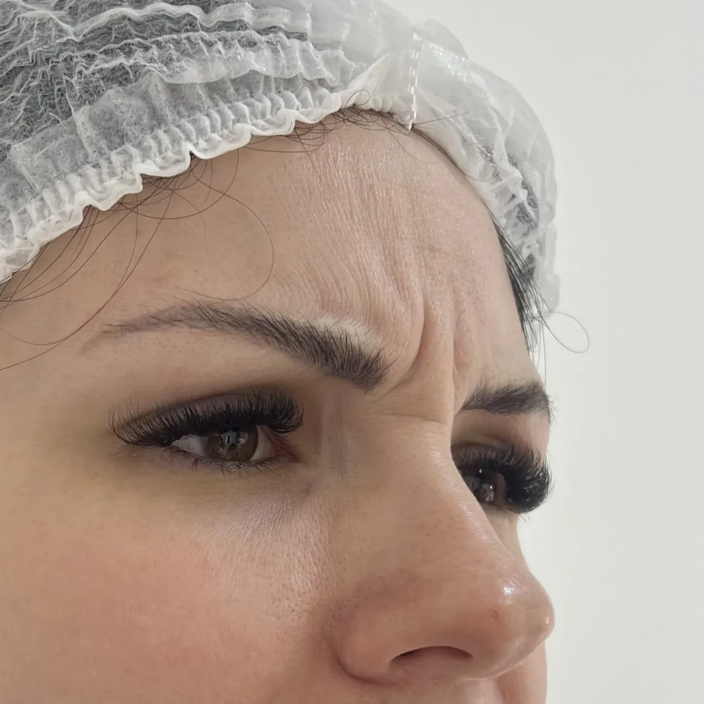
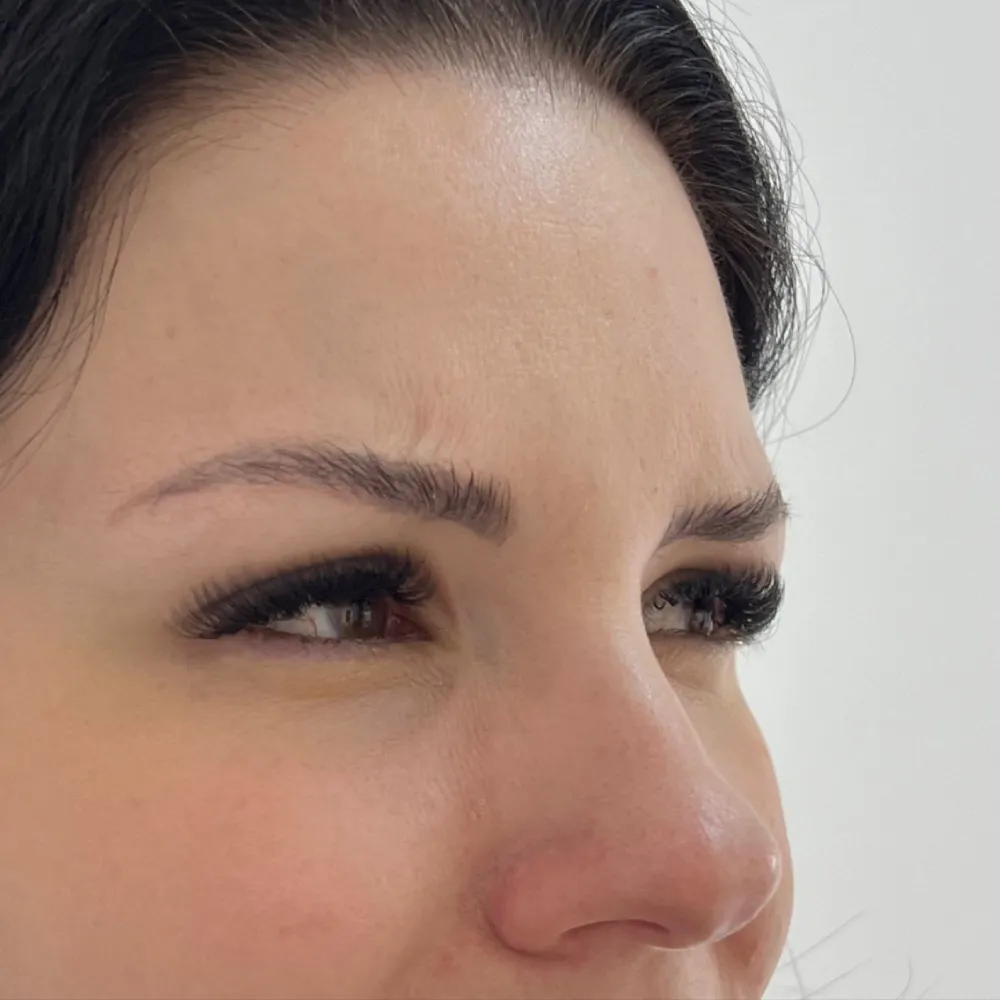
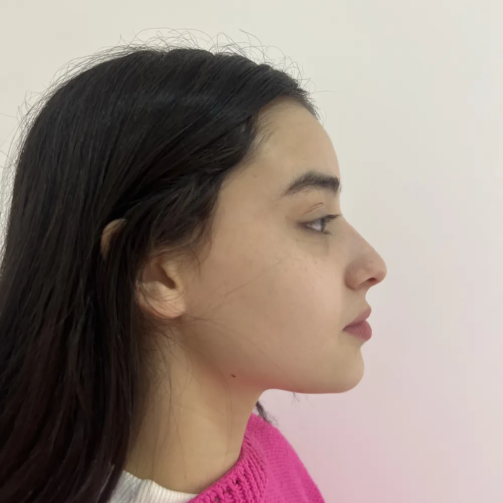
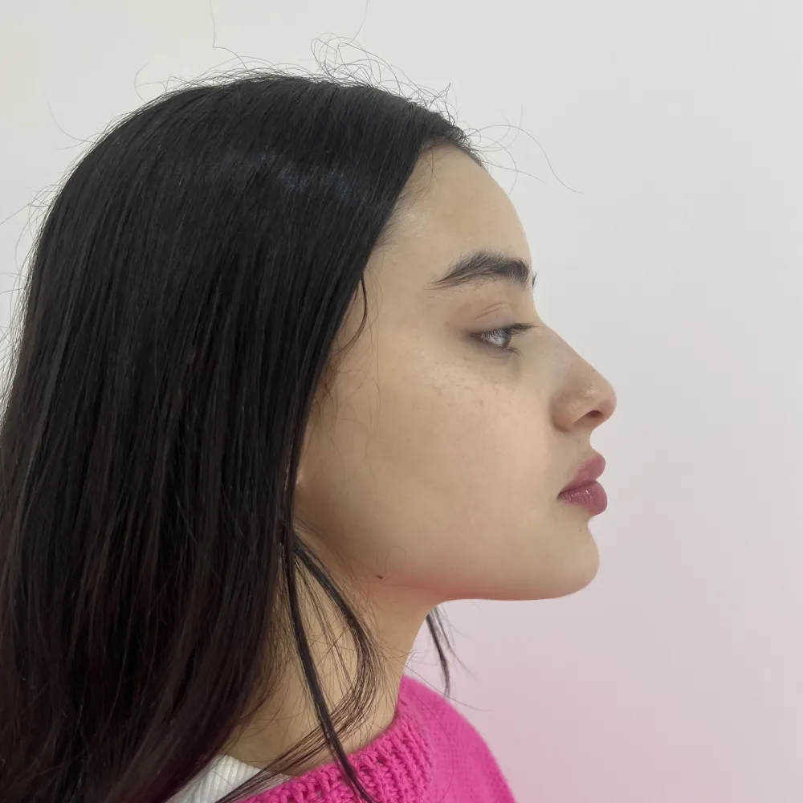
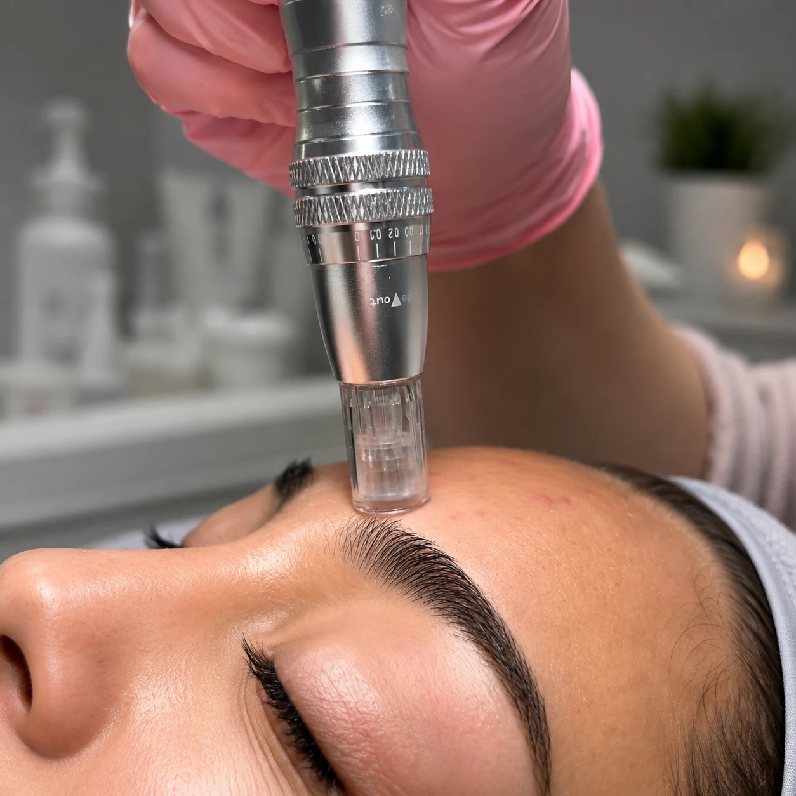
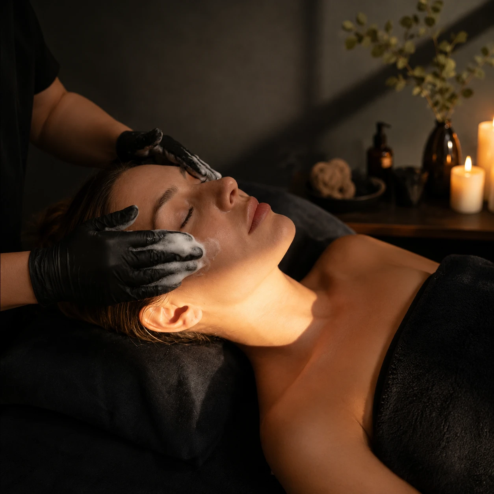

Quem sou eu?
Dra. Renata dos Anjos Biomédica Esteta
Sou a Dra. Renata dos Anjos, Biomédica Esteta, pós-graduada em Cosmetologia e Estética e pós-graduanda em Estética Avançada, com atuação focada em Harmonização Facial. Antes de indicar qualquer procedimento, busco entender o que incomoda você e avalio com atenção sua pele, seus traços e suas expectativas.
Acredito que cada tratamento precisa ter um propósito. Por isso, meu compromisso é explicar com clareza as possibilidades, os riscos e os limites de cada procedimento. E se algo não fizer sentido para você ou para o seu momento, dizer “não” também faz parte do meu cuidado.
Toxina botulínica (Botox)
A toxina botulínica atua relaxando temporariamente músculos responsáveis pelas linhas de expressão e por determinados movimentos do rosto.
O tratamento é planejado de forma individualizada, considerando a musculatura, os traços e as necessidades de cada paciente, buscando suavizar marcas, equilibrar movimentos e preservar a expressão facial.


*Imagens reais com autorização para divulgação.
Perfiloplastia
A perfiloplastia busca harmonizar o perfil facial por meio de um planejamento personalizado, considerando as proporções entre nariz, lábios e queixo. Cada indicação respeita a estrutura, as características e os objetivos individuais de cada paciente.


*Imagens reais com autorização para divulgação.
Microagulhamento e Peeling
Tratamentos voltados para melhorar a qualidade e a aparência da pele, podendo auxiliar em queixas como manchas, textura irregular, poros aparentes e sinais do envelhecimento.
A escolha do procedimento e do protocolo é feita após a avaliação da pele, considerando suas necessidades e o momento de cada paciente. Antes de qualquer indicação, explico as possibilidades, os cuidados e os limites de cada tratamento.

Limpeza de pele
A limpeza de pele é um cuidado voltado à remoção de impurezas e cravos, contribuindo para uma pele mais limpa, equilibrada e bem cuidada.
Cada atendimento é realizado de acordo com as características e necessidades da sua pele, respeitando o momento atual e orientando também os cuidados necessários para manter os resultados no dia a dia.

O que dizem as minhas pacientes
Veja o que pacientes que já passaram por aqui têm a dizer sobre o cuidado recebido.

Antes de decidir
Cuidado em cada etapa
Informação e confiança também fazem parte do processo. Tire suas principais dúvidas e entenda como funciona meu atendimento.
Como funciona a avaliação?
Antes de qualquer procedimento, realizo uma avaliação inicial sem custo. Esse é o momento de entender o que incomoda você, avaliar sua pele e seus traços e conversar sobre as possibilidades para o seu caso.
Também explico os cuidados, riscos e limites de cada tratamento. E, se um procedimento não for indicado para você, vou dizer isso com clareza.
O que acontece depois do procedimento?
Meu cuidado continua após o atendimento. Acompanho sua evolução e permaneço disponível para orientar os cuidados necessários e esclarecer dúvidas durante o período de recuperação.
Para quem é esse cuidado?
Para quem busca cuidar da aparência sem deixar de se reconhecer. Para quem valoriza uma avaliação individual, resultados equilibrados e quer compreender as possibilidades antes de decidir por um procedimento.
Também é para quem já teve uma experiência que não saiu como esperava e procura um atendimento cuidadoso para avaliar seu caso.
Já fiz um procedimento e não gostei. E agora?
O primeiro passo é entender o que foi realizado, o que está incomodando você e como está o seu caso atualmente.
Durante a avaliação, você poderá me contar sua experiência e esclarecer suas dúvidas. A partir disso, avalio quais possibilidades existem e se há indicação para algum tipo de tratamento.
Nenhuma correção é prometida antes de uma avaliação individual.
Se sentir segurança, estou disponível para conversar com você.
Atendimento em Pato Branco
Seu cuidado pode começar por uma conversa.
Segunda a sábado, das 08h às 18h, mediante agendamento e disponibilidade.